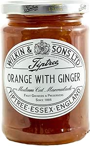

Ginger Marmalade

Description
Sore throat? The kick of ginger in this marmalade will soothe a raw throat.
Just a spoonful of this will save you.
The sweetness of the jam will have you coming back for more. Whether you are a marmalade lover, or a bear, you will find that ginger jam is addictive.
Truly addictive that it might need it's own warning label.
So here is me formally warnging you the addictiveness of ginger marmalade.
When you this recipe of ginger marmalade, don't say we didn't warn you.
TIP: Try it with a slice of brie cheese melted on a warm piece of toast. You won't beleive your mouth.
Ingredienets
-
3 cups peeled fresh ginger
-
4 cups water
-
5 cups sugar
-
5 jars
Steps
- Divide the ginger in half, and chop half into cubes; shred the other half with a box grater or in a food processor using the shredding blade. Total ginger should equal 3 cups. Place the ginger into a large saucepan with water over medium heat, bring to a boil, and reduce heat to a simmer. Cover the pot, and simmer the ginger until tender, about 1 hour and 15 minutes. Add more water if needed to keep mixture from drying out. Pour the cooked ginger into a fine-mesh strainer, drain, and retain 1/2 cup of the ginger-flavored water. Place the cooked ginger in a bowl with the retained liquid, and cool at least 4 hours or overnight in refrigerator.
-
When ginger is thoroughly cooled, place into a large, heavy-bottomed pot, and stir in the sugar; bring to a boil over medium-high heat, and boil hard for 1 minute, stirring constantly. Stir in the pouch of liquid pectin, reduce heat to a simmer, and cook for 7 more minutes, skimming foam from top of marmalade.
-
Sterilize the canning jars and lids in boiling water for at least 5 minutes. Pack the marmalade into the hot, sterilized jars, filling the jars to within 1/4 inch of the top. Run a knife or a thin spatula around the insides of the jars after they have been filled to remove any air bubbles. Wipe the rims of the jars with a moist paper towel to remove any food residue. Top with lids, and screw on rings.
-
Place a rack in the bottom of a large stockpot and fill halfway with water. Bring to a boil over high heat, then carefully lower the jars into the pot using a holder. Leave a 2 inch space between the jars. Pour in more boiling water if necessary until the water level is at least 1 inch above the tops of the jars. Bring the water to a full boil, cover the pot, and process for 15 minutes.
-
Remove the jars from the stockpot and place onto a cloth-covered or wood surface, several inches apart, until cool. Once cool, press the top of each lid with a finger, ensuring that the seal is tight (lid does not move up or down at all). Store in a cool, dark area.